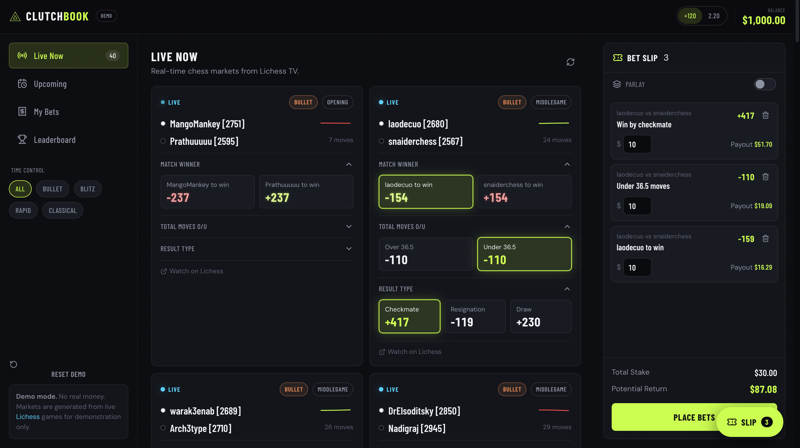

About Me
I studied Data Science at the University of Massachusetts Amherst. I've interned at Siemens and Altair, where I built data-intensive systems and customer-facing tools. I was also Co-President of BUILD UMass, a 65+ member student-led engineering organization that ships production software for non-profits.
Projects

A knowledge graph that models ingredients, their flavor compounds, and pairing relationships based on shared chemistry.

Mobile app for coordinating disaster response teams, handed off to the RN Response Network (powered by National Nurses United).

A sportsbook concept for esports, with real-time odds derived from player stats on livestreamed games.

AI-powered contract management platform that detects illegal clauses in legal agreements.